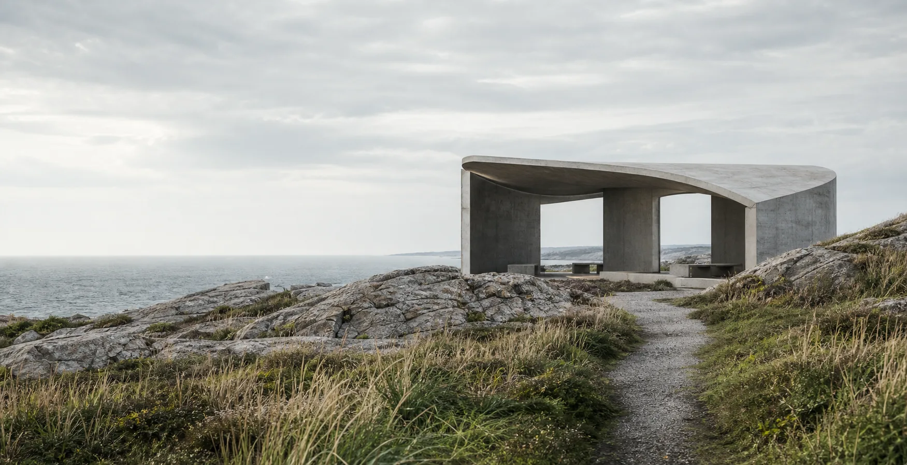

Language
Semantic names preserve purpose.
Feature 97 · Product value
A compact indexed rail introduces three system capabilities beside one larger editorial focus story.
The narrow rail supports scanning; the larger panel gives the active idea enough room for context and imagery.
Semantic names preserve purpose.
Grid preserves relationships.
Tests preserve guarantees.
Native behavior, responsive composition, and measurable checks keep every team moving toward the same release.
